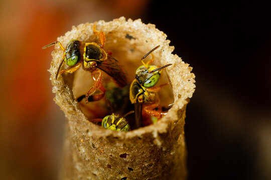
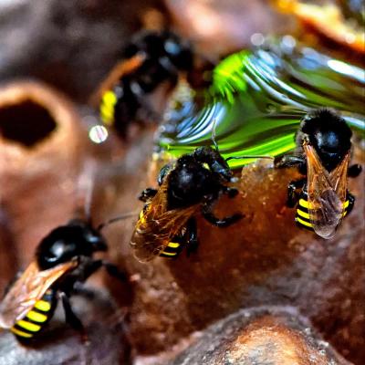
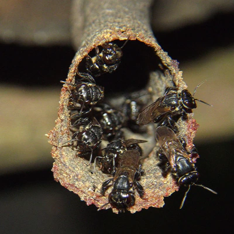
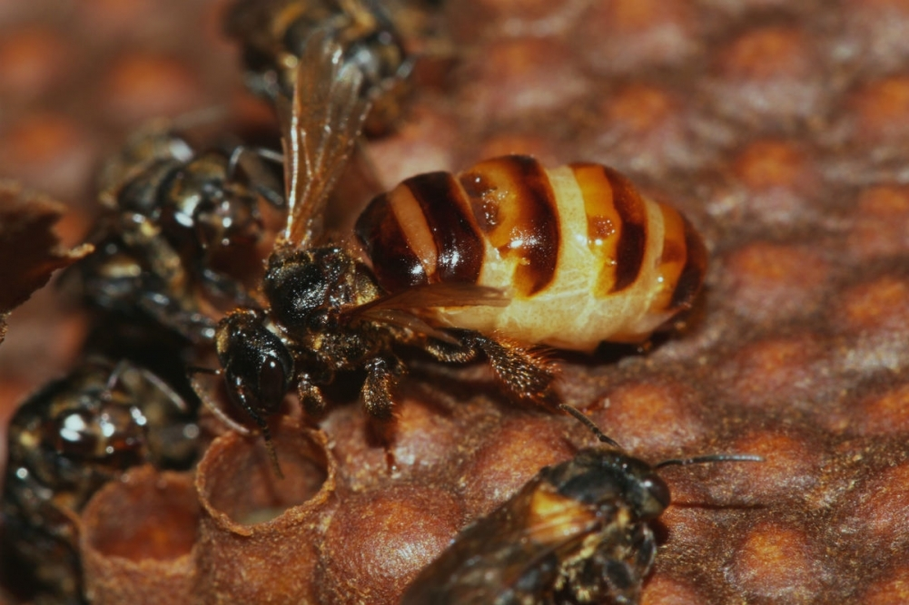

Um meliponário urbano em Balneário Camboriú — SC.
Abelhas nativas, câmeras ao vivo, vidas em flor.
O GTacy Meliponário nasceu dentro de um apartamento em Balneário Camboriú — SC. O que começou como uma curiosidade virou missão: criar, proteger e apresentar ao mundo as abelhas nativas sem ferrão do Brasil.
Aqui, as colmeias convivem com a vida cotidiana. E para quem está longe, câmeras IP transmitem ao vivo a rotina de cada colmeia — 24 horas por dia, sete dias por semana. Você acompanha de onde estiver, em tempo real.
Quatro espécies nativas sem ferrão, cada uma com seu mel, seu jeito de viver e sua colmeia transmitida ao vivo.




Muito além do mel — elas sustentam a vida como a conhecemos.
Abelhas nativas são as maiores polinadoras da flora brasileira. Sem elas, boa parte das frutas, sementes e flores que conhecemos deixaria de existir — e junto, toda a cadeia de vida que depende delas.
Cada espécie de abelha nativa é adaptada a um grupo específico de plantas. Proteger essas abelhas é proteger a diversidade de toda uma floresta — e do ecossistema que sustenta água, solo e clima.
O mel das abelhas nativas sem ferrão possui composição única — rico em antioxidantes, enzimas e compostos antimicrobianos que a ciência vem cada vez mais estudando e confirmando.
Quando as abelhas prosperam, o ecossistema ao redor também está saudável. Elas são indicadoras naturais da qualidade do ambiente — do ar, da água e da vegetação que nos rodeia.